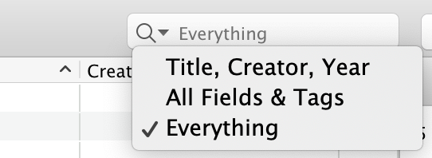

Quick searches provide a fast way to find items in a library or collection.
A user can conduct a quick search in three different modes.
Matches against these three fields, as well as publication titles.
Matches against all fields, as well as tags and text in notes.
Matches against all fields, tags, text in notes, and indexed text in PDFs (this requires that PDF indexing be enabled).
